본 포스트는 서울대학교 알고리즘(4190.407) 강의 자료 중 Lecture 2 — Asymptotic Notation, Worst-Case Analysis, and MergeSort (총 81장)를 바탕으로, 강의를 처음 듣는 독자도 논리적 흐름을 따라갈 수 있도록 재구성한 것입니다. 원본 슬라이드는 영문으로 작성되어 있으며, 본문의 대섹션 구분은 강의 중간중간 반복해서 등장하는 The Plan 슬라이드의 목차(InsertionSort recap → Worst-case analysis → Asymptotic Analysis → MergeSort → Wrap-Up)를 그대로 따랐습니다.
한 줄 요약 (TL;DR)
“알고리즘이 ’동작한다’와 ’빠르다’를 각각 최악의 경우 분석과 점근 표기법으로 정의하고 나면, 정렬 문제의 답이 \(O(n^2)\)에서 \(O(n\log n)\)으로 내려갑니다.”
1강이 “알고리즘은 멋지다 → 분할 정복 → 카라추바 곱셈”까지를 엄밀하지 않은 분석(not-so-rigorous analysis)으로 훑었다면, 2강은 그 “엄밀하지 않음”을 걷어내는 회차입니다. 먼저 “동작한다(does it work?)”를 모든 입력에 대한 정확성으로 정의하는 최악의 경우 분석(worst-case analysis)을 도입하고, InsertionSort의 정확성을 수학적 귀납법으로 증명합니다. 다음으로 “빠르다(is it fast?)”를 하드웨어·언어·상수배로부터 자유롭게 만드는 점근 표기법 \(O, \Omega, \Theta\)로 정의하고, 그 언어로 InsertionSort가 \(O(n^2)\)임을 확인합니다. 마지막으로 분할 정복 기반의 MergeSort를 제시하고, 재귀 트리(recursion tree)를 그려 “레벨당 \(O(n)\) × \(\log n + 1\)개 레벨 \(= O(n\log n)\)”이라는 결론에 도달합니다.
1. 정렬과 삽입 정렬 (Sorting & InsertionSort Recap)
1.1 지난 시간 (Last time)
1강에서 다룬 내용을 두 갈래로 나눠 되짚어 보겠습니다.
- 철학(Philosophy)
- 알고리즘은 멋집니다(Algorithms are awesome!).
- 우리가 매번 던질 세 가지 질문: ① 동작하는가(Does it work?) ② 빠른가(Is it fast?) ③ 더 잘할 수 있는가(Can I do better?)
- 기술적 내용(Technical content)
- 분할 정복(divide-and-conquer)
- 카라추바 정수 곱셈(Karatsuba integer multiplication)
- 엄밀하지 않은 분석(not-so-rigorous analysis)
세 번째 항목이 이번 강의의 출발점입니다. 1강에서는 “대충 이 정도 걸린다”는 식으로 넘어갔는데, 2강은 그 “대충”을 정의로 대체하는 작업을 합니다.
1.2 오늘의 계획 (The Plan)
이번 강의는 다음 순서로 진행됩니다. 이 목차는 슬라이드 중간중간 화살표와 함께 계속 다시 등장하며, 지금 어디쯤 와 있는지를 알려 주는 이정표 역할을 합니다.
- 정렬(Sorting) — 오늘의 소재
- 최악의 경우 분석(Worst-case analysis) → InsertionSort: Does it work?
- 점근적 분석(Asymptotic Analysis) → InsertionSort: Is it fast?
- MergeSort → Does it work? / Is it fast?
- 마무리(Wrap-Up)
즉 “동작하는가”와 “빠른가”라는 두 질문을 각각 정의하고, 그 정의를 두 개의 정렬 알고리즘에 적용해 보는 것이 전체 구조입니다.
1.3 정렬 문제 (Sorting)
길이 \(n\)의 리스트가 주어졌을 때, 원소들을 오름차순으로 재배열하여 반환합니다. 예를 들어 \([6, 4, 3, 8, 1, 5, 2, 7]\)이 입력이면 \([1, 2, 3, 4, 5, 6, 7, 8]\)이 출력입니다.
- 정렬은 중요한 기본 연산(important primitive)입니다. 그 자체로도 쓰이지만, 수많은 다른 알고리즘의 전처리 단계로 등장합니다.
- 오늘은 편의를 위해 모든 원소가 서로 다르다(all elements are distinct)고 가정합니다.
1.4 삽입 정렬 (Insertion Sort)
삽입 정렬의 아이디어는 카드를 손에 정리하는 방식 그대로입니다. 리스트를 이미 정렬된 앞부분과 아직 정렬되지 않은 뒷부분으로 나눈 뒤, 뒷부분의 원소를 하나씩 앞부분의 제자리에 꽂아 넣습니다.
- 정렬되지 않은 원소가 남아 있는 동안 반복합니다.
- 선형 탐색(linear search)으로, 정렬된 부분 안에서 정렬되지 않은 부분의 첫 원소가 들어가야 할 위치를 찾습니다.
- 삽입 위치 이후의 모든 원소를 한 칸씩 뒤로 밀어 새 원소가 들어갈 공간을 만듭니다.
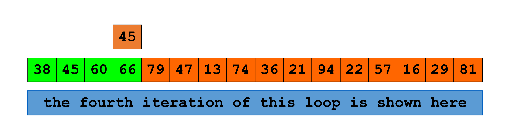
38, 45, 60, 66은 이미 정렬이 끝난 앞부분이고, 주황색 칸 79, 47, 13, …, 81은 아직 손대지 않은 뒷부분입니다. 위쪽에 따로 떠 있는 주황색 45 상자는 이번 반복에서 뽑아 들고 있는 원소(current)로, 이 값이 초록색 구간 안에서 자기 자리를 찾아 들어가게 됩니다. 파란 띠의 문구가 알려 주듯 이 그림은 전체 알고리즘이 아니라 바깥 루프의 한 반복만을 확대한 장면이며, 초록 구간이 매 반복마다 한 칸씩 길어진다는 점이 뒤에서 다룰 귀납법의 귀납 가설과 정확히 대응합니다.1.5 예시로 따라가 보기 (InsertionSort Example)
\([6, 4, 3, 8, 5]\)를 정렬해 보겠습니다. 절차는 다음과 같습니다.
- 먼저
A[1]을 리스트 앞쪽으로 옮깁니다. 자기보다 작은 값을 만나거나 더 이상 갈 수 없을 때까지 계속 왼쪽으로 이동시킵니다. - 그다음
A[2],A[3],A[4]에 대해 같은 일을 반복합니다.
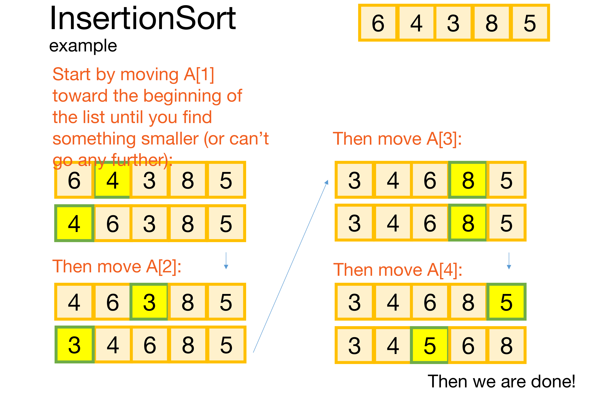
A[1]=4가 6 앞으로 이동하여 \([4,6,3,8,5]\)가 되고, 이어서 A[2]=3이 맨 앞으로, 오른쪽 열에서 A[3]=8은 이미 제자리라 그대로, 마지막으로 A[4]=5가 4와 6 사이로 들어가 \([3,4,5,6,8]\)이 완성됩니다. 주황색 설명 문구가 각 단계의 의도를 적어 두고 있으며, 매 단계에서 왼쪽 접두부가 항상 정렬 상태로 유지된다는 사실이 이 그림이 전달하는 핵심입니다.1.6 두 개의 질문
알고리즘을 하나 손에 넣었으니 이제 물어야 할 것은 늘 같은 두 가지입니다.
- 동작하는가? (Does it work?)
- 빠른가? (Is it fast?)
그런데 강의는 여기서 곧바로 답하지 않고 되묻습니다 — “그게 대체 무슨 뜻인가?(What does that mean???)” 이 되물음이 2강 전체를 끌고 가는 동력입니다.
2. 최악의 경우 분석 (Worst-Case Analysis)
2.1 “동작한다”는 주장의 잘못된 증명 두 가지
먼저 “InsertionSort는 동작한다”를 증명하겠다는 두 가지 시도를 봅시다. 둘 다 틀렸습니다.
- “증명 1”: 이 예시에서 잘 됐다. 앞 절의 \([6,4,3,8,5]\) 예시가 정렬로 끝났으니 동작한다는 주장입니다.
- “증명 2”: 무작위 리스트 여러 개에 돌려 봤더니 항상 잘 됐다.
두 번째 시도는 실제 코드로 제시됩니다.
A = [1,2,3,4,5,6,7,8,9,10]
for trial in range(100):
shuffle(A) # 리스트를 무작위로 섞고
InsertionSort(A) # 정렬한 뒤
if is_sorted(A): # 정렬됐는지 확인
print('YES IT IS SORTED!')100번 모두 YES IT IS SORTED!가 출력됩니다. 그런데도 이것은 증명이 아닙니다.
위 코드가 확인한 것은 길이 10짜리 리스트의 순열 중 100개에 대해 알고리즘이 옳았다는 사실뿐입니다. 알고리즘은 모든 길이, 모든 입력에 대해 옳아야 하므로, 아무리 많은 테스트도 원리적으로 증명을 대신할 수 없습니다. 지금은 InsertionSort가 워낙 단순해서 이 구분이 사소해 보이지만, 앞으로 만날 알고리즘들은 “돌려 보니 되더라”가 통하지 않을 만큼 복잡해집니다.
2.2 “동작한다(work)”는 것은 무엇인가
그렇다면 “동작한다”를 어떻게 정의해야 할까요? 강의는 후보를 하나씩 기각합니다.
- 입력 하나에 대해 옳으면 충분한가? — 아닙니다.
- 대부분의 입력에 대해 옳으면 충분한가? — 그것도 아닙니다.
이 수업에서는 다음 두 규약을 채택합니다.
- 알고리즘은 가능한 모든 입력에 대해 옳아야(correct on all possible inputs) 합니다.
- 알고리즘의 실행 시간은 모든 입력에 대한 최악의 실행 시간(the worst possible running time over all inputs)으로 정의합니다.
2.3 게임으로 본 최악의 경우 분석
이 정의는 두 사람이 벌이는 게임으로 생각하면 직관적입니다.
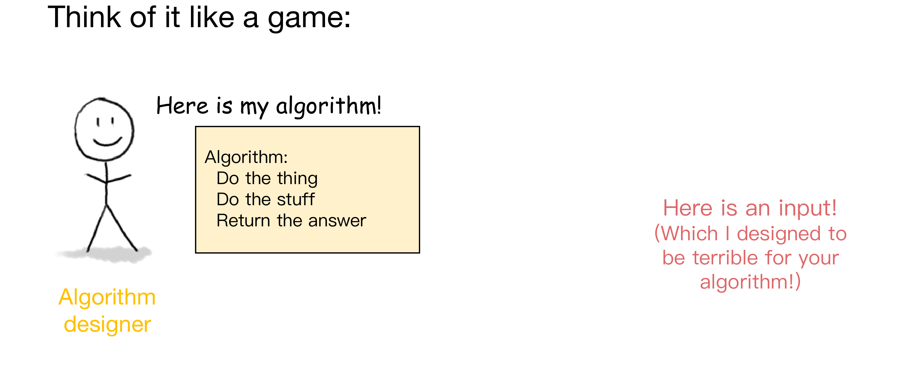
이 정의의 장단점은 강의에서 같은 문구로 제시됩니다.
| 구분 | 내용 |
|---|---|
| 장점(Pros) | 매우 강한 보장(very strong guarantee) |
| 단점(Cons) | 매우 강한 보장(very strong guarantee) |
같은 말이 장점이자 단점인 이유는 이렇습니다. 최악의 경우를 통과했다면 어떤 입력이 와도 안전하다는 뜻이므로 더 바랄 것 없는 보장입니다. 반대로 현실에서는 거의 나타나지 않는 극단적인 입력 하나 때문에 실제로는 훌륭한 알고리즘이 나쁜 평가를 받을 수도 있습니다.
2.4 다시 InsertionSort로: 정말 동작하는가
이 정의를 손에 쥐고 InsertionSort로 돌아옵니다. 솔직히 말해 동작한다는 것은 꽤 명백합니다. 하지만 강의는 여기서 굳이 시간을 씁니다 — 앞으로는 그렇게 명백하지 않을 것이므로, 지금 단순한 예제로 “엄밀하게 증명하는 방법”을 익혀 두자는 것입니다.
2.5 왜 동작하는가 — 한 단계의 논리
핵심 관찰은 아주 짧습니다.
- 이미 정렬된 리스트 \([3, 4, 6, 8]\)과 새 원소 \(5\)가 있다고 합시다.
- \(5\)를 \(5\)보다 작으면서 가장 큰 원소의 바로 뒤에 삽입합니다. 즉 \(4\) 바로 뒤입니다.
- 그러면 \([3, 4, 5, 6, 8]\)이라는 정렬된 리스트를 얻습니다.
문장으로 옮기면 “정렬된 리스트에 원소 하나를 올바르게 삽입하면 결과도 정렬된 리스트”입니다. 이 한 문장이 뒤이을 귀납법의 귀납 단계 그 자체입니다.
2.6 모든 단계에 같은 논리를 적용하기
이제 위 논리를 매 단계에 반복 적용하면 알고리즘 전체의 정확성이 따라옵니다.
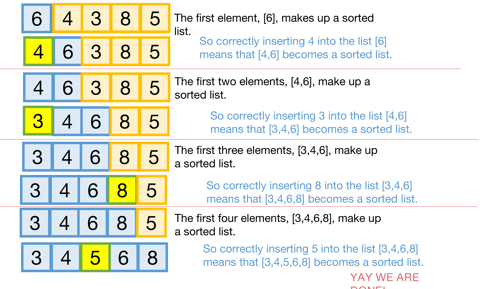
2.7 수학적 귀납법에 의한 증명 (Proof by Induction)
길이 \(n\)인 리스트 \(A\)에 대하여 다음을 보입니다. (파이썬 슬라이스 표기 \(A[:m]\)은 앞에서부터 \(m\)개의 원소를 뜻합니다.)
귀납 가설(Inductive Hypothesis) \[\text{바깥 루프의 } i \text{번째 반복이 끝난 시점에 } A[:i+1] \text{은 정렬되어 있다.}\]
기저 사례(Base case, \(i=0\)) \(0\)번째 반복이 끝난 시점에 \(A[:1]\)이 정렬되어 있어야 합니다. 원소가 하나뿐인 리스트는 언제나 정렬되어 있으므로 참입니다. ✓
귀납 단계(Inductive step) 임의의 \(0 < k < n\)에 대하여, 귀납 가설이 \(i = k-1\)에서 성립하면 \(i = k\)에서도 성립합니다. 즉 \(A[:k]\)가 단계 \(k-1\)에서 정렬되어 있었다면, \(A[:k+1]\)은 단계 \(k\)에서 정렬되어 있습니다. 이것은 §2.5의 관찰 — 정렬된 리스트에 원소 하나를 올바른 자리에 삽입하면 결과도 정렬된 리스트 — 로부터 따라옵니다.
결론(Conclusion) 귀납 가설이 \(i = 0, 1, \dots, n-1\) 전부에 대해 성립합니다. 특히 \(i = n-1\)에서 성립하므로, \((n-1)\)번째 반복이 끝난 시점, 곧 알고리즘이 종료된 시점에 \(A[:n] = A\) 전체가 정렬되어 있습니다. 이것이 우리가 원하던 결론입니다. ✓
2.8 여기까지 배운 것
- 이 수업에서는 최악의 경우 분석을 사용합니다. “나쁜 놈(bad guy)”이 우리 알고리즘에 대해 최악의 입력을 만들어 낸다고 가정하고, 그 입력에서의 성능을 측정합니다.
- 이 정의 아래에서 InsertionSort는 “동작”합니다 — 수학적 귀납법으로 증명했습니다.
첫 번째 질문이 해결되었습니다. 이제 두 번째 질문, “빠른가?”로 넘어갑니다.
3. 점근적 분석 (Asymptotic Analysis)
3.1 첫 번째 답과 그 문제점
“InsertionSort는 얼마나 빠른가?”에 대한 가장 소박한 답은 “돌려 보고 시간을 재면 된다”입니다. 그런데 여기에는 치명적인 문제가 있습니다.
- 같은 알고리즘이라도 구현(implementation)에 따라 느려지거나 빨라집니다.
- 하드웨어(hardware)에 따라서도 느려지거나 빨라집니다.
실제로 강의는 “순진한 구현(naive version)”과 “덜 순진한 구현(less naive version)”의 실측 곡선이 눈에 띄게 갈라지는 그래프를 보여 줍니다. 이 답을 택하면 “실행 시간”이라는 개념 자체가 잘 정의되지 않습니다(isn’t even well-defined).
3.2 두 번째 답: 연산 세기와 그 문제점
두 번째 답은 연산의 개수를 세는 것입니다. 다음 의사코드를 놓고 세어 봅시다.
def InsertionSort(A):
for i in range(1,len(A)):
current = A[i]
j = i-1
while j >= 0 and A[j] > current:
A[j+1] = A[j]
j -= 1
A[j+1] = current강의자가 직접 센 결과는 다음과 같습니다.
- 변수 할당(variable assignments): \(2n^2 - n - 1\)
- 증감 연산(increments/decrements): \(2n^2 - n - 1\)
- 비교 연산(comparisons): \(2n^2 - 4n + 1\)
- …
그런데 원본 슬라이드는 이 공식들 옆에 “이 공식들에 주의를 기울이지 마세요, 중요하지 않습니다”라고 못박아 두었습니다. 여기서 볼 것은 숫자가 아니라 “이 방식은 지속 가능하지 않다”는 사실입니다. 실제로 이 접근은 다음 두 이유로 막힙니다.
- 매우 지루합니다(It’s very tedious!).
- 이 수치를 실행 시간으로 환산하려면 각 연산이 얼마나 걸리는지를 비롯한 온갖 부수 정보를 알아야 합니다.
결국 개별 연산을 세는 일은 품이 많이 들면서도 그다지 유용하지 않습니다.
3.3 이 수업에서 쓸 것: Big-Oh 표기법
그래서 채택하는 것이 Big-Oh 표기법입니다. 이 표기법은 프로그래밍 언어·컴퓨팅 플랫폼 등에 무관하게, 그리고 모든 연산을 일일이 세지 않고도 알고리즘의 실행 시간을 의미 있게 이야기할 수 있게 해 줍니다.
3.4 핵심 아이디어 (Main idea)
실행 시간이 입력 크기 \(n\)에 따라 어떻게 스케일하는지에만 집중합니다. 휴리스틱하게 말하면, 등장하는 항 중 \(n\)에 대해 가장 크게 자라는 것 하나만 봅니다.
| 연산 횟수 (Number of operations) | 점근적 실행 시간 (Asymptotic Running Time) |
|---|---|
| \(\frac{1}{10} \cdot n^2 + 100\) | \(O(n^2)\) |
| \(0.063 \cdot n^2 - 0.5n + 12.7\) | \(O(n^2)\) |
| \(100 \cdot n^{1.5} - 10^{10000}\sqrt{n}\) | \(O(n^{1.5})\) |
| \(11 \cdot n\log(n) + 1\) | \(O(n\log(n))\) |
마지막 행처럼 더 느리게 자라는 알고리즘을 두고 나머지보다 “점근적으로 더 빠르다(asymptotically faster)”고 말합니다. 세 번째 행의 \(-10^{10000}\sqrt{n}\)처럼 상수가 터무니없이 커도 차수가 낮으면 무시된다는 점이 이 표기법의 성격을 잘 보여 줍니다.
3.5 왜 좋은 아이디어인가
어떤 알고리즘의 실행 시간이 다음과 같다고 합시다.
\[T(n) = 10n^2 + 3n + 7 \ \text{ms}\]
이 식의 세 부분은 성격이 전혀 다릅니다.
- 상수 계수 \(10\) — 컴퓨팅 플랫폼에 크게 좌우됩니다. 다른 기계에서 재면 다른 값이 나옵니다.
- 저차항 \(3n + 7\) — \(n\)이 커지면 별로 중요하지 않습니다.
- 남는 것은 \(n^2\) 항 — 이것이 의미 있는 부분입니다.
즉 \(T(n)\)에서 기계에 의존하는 부분과 곧 무의미해지는 부분을 걷어내면 \(n^2\)만 남고, 그 남은 것이 알고리즘 자체의 성질입니다.
3.6 점근적 분석의 장단점
| 장점 (Pros) | 단점 (Cons) |
|---|---|
| 하드웨어·언어에 특화된 문제로부터 추상화합니다. | \(n\)이 (상수 계수에 비해) 충분히 클 때만 의미가 있습니다. |
| 알고리즘 분석을 훨씬 다루기 쉽게 만듭니다. | 그래서 \(1000000000\,n\)이 \(n^2\)보다 “더 낫다”는 결론이 나옵니다. |
| 큰 입력에서 알고리즘들이 어떻게 동작할지를 의미 있게 비교하게 해 줍니다. |
단점 칸의 예시가 이 표기법의 한계를 정직하게 드러냅니다. \(10^9 n\)과 \(n^2\)을 비교하면 점근적으로는 전자가 낫지만, 실제로 전자가 이기려면 \(n > 10^9\)이어야 합니다.
3.7 \(O(\cdot)\)의 비공식 정의
\(T(n)\), \(g(n)\)을 양의 정수에서 정의된 함수라고 합시다. \(T(n)\)은 실행 시간이라고 생각하면 되므로 양수이고 \(n\)에 대해 증가합니다.
“\(T(n)\)은 \(O(g(n))\)이다”란, 충분히 큰 모든 \(n\)에 대하여 \(T(n)\)이 \(g(n)\)의 어떤 상수배 이하라는 뜻입니다.
여기서 “상수”란 \(n\)에 의존하지 않는 어떤 수를 말합니다. 참고로 \(O(\cdot)\)는 “빅오(big-oh of …)” 또는 그냥 “오(oh of …)”라고 읽습니다.
3.8 \(O(\cdot)\)의 형식적 정의
\[T(n) = O(g(n)) \iff \exists\, c > 0,\ n_0 \ \text{ s.t. } \ \forall n \ge n_0,\quad T(n) \le c \cdot g(n)\]
기호를 하나씩 읽으면 — \(\exists\)(“어떤 …가 존재한다”) 양수 \(c\)와 문턱값 \(n_0\)가 존재하여, \(\forall\)(“모든”) \(n \ge n_0\)에 대해 \(T(n) \le c \cdot g(n)\)이 성립한다는 뜻입니다. \(c\)는 상수배를 허용하는 여유이고, \(n_0\)는 “충분히 큰”을 형식화한 문턱입니다.
\(T(n) = 2n^2 + 10\), \(g(n) = n^2\)인 경우로 확인해 봅시다.
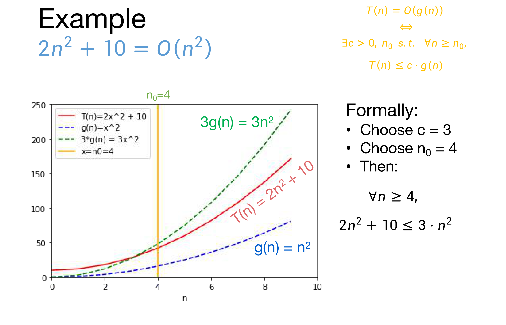
그런데 \(c\)와 \(n_0\)의 선택은 유일하지 않습니다.
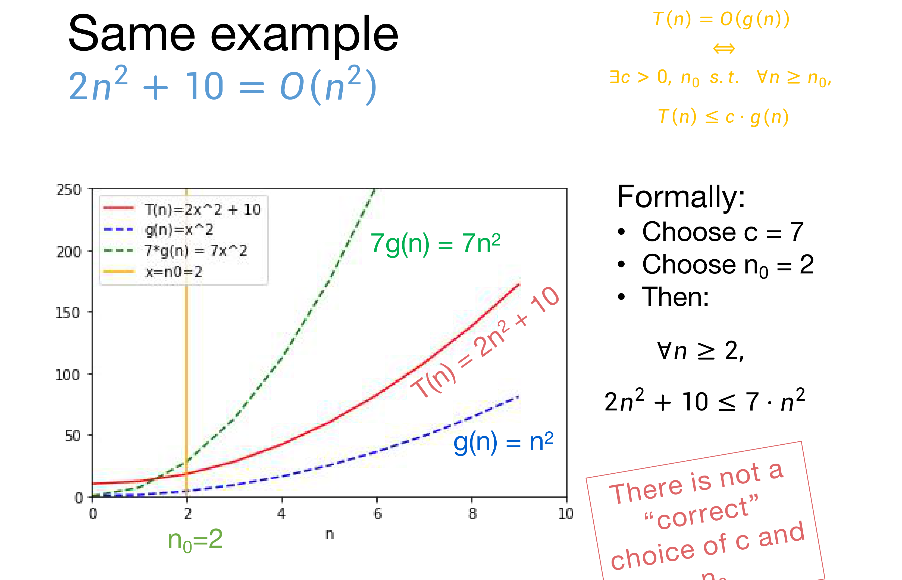
3.9 \(O\)는 상한이다 — \(n = O(n^2)\)
\(O(\cdot)\)는 상한(upper bound)일 뿐이며, 그 상한이 꽉 조일 필요는 없습니다.
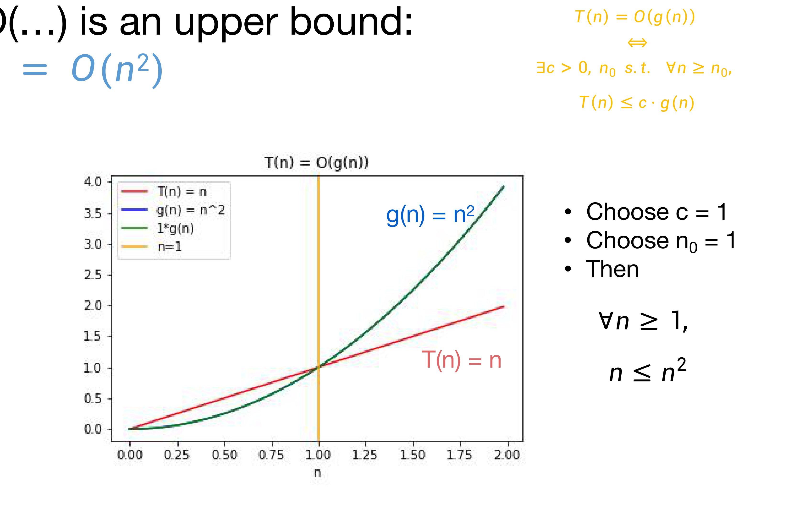
3.10 \(\Omega(\cdot)\): 하한
“\(T(n)\)은 \(\Omega(g(n))\)이다”란, 충분히 큰 \(n\)에 대하여 \(T(n)\)이 \(g(n)\)의 어떤 상수배 이상이라는 뜻입니다.
\[T(n) = \Omega(g(n)) \iff \exists\, c > 0,\ n_0 \ \text{ s.t. } \ \forall n \ge n_0,\quad c \cdot g(n) \le T(n)\]
\(O\)의 정의와 비교하면 부등식의 양변이 뒤바뀐 것뿐입니다.
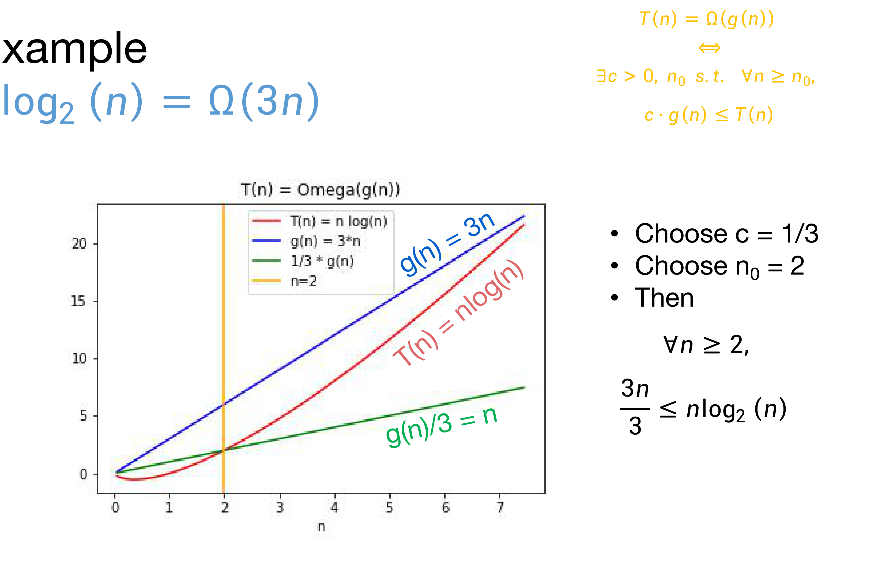
3.11 \(\Theta(\cdot)\): 양쪽 모두
상한과 하한을 모두 손에 넣었으니, 둘을 합친 표기가 자연스럽게 따라옵니다. “\(T(n)\)은 \(\Theta(g(n))\)이다”는 다음 둘 다가 성립할 때, 그리고 그때만 참입니다.
\[T(n) = O(g(n)) \quad \text{그리고} \quad T(n) = \Omega(g(n))\]
즉 \(\Theta\)는 “이보다 나쁘지 않고, 동시에 이보다 좋지도 않다”는 뜻이므로, \(O\)가 주는 느슨한 상한과 달리 증가율을 정확히 특정합니다.
3.12 반례: \(n^2\)은 \(O(n)\)이 아니다
이번에는 성립하지 않음을 보이는 방법입니다. 귀류법(proof by contradiction)을 씁니다.
- \(n^2 = O(n)\)이라고 가정합시다.
- 그러면 어떤 양수 \(c\)와 \(n_0\)가 존재하여 다음이 성립합니다. \[\forall n \ge n_0, \quad n^2 \le c \cdot n\]
- 양변을 \(n\)으로 나누면 \[\forall n \ge n_0, \quad n \le c\]
- 그런데 이것은 참일 수 없습니다. \(n = \max(n_0,\ c+1)\)을 대입해 봅시다. 이때 \(n \ge n_0\)이면서 동시에 \(n > c\)입니다.
- 모순입니다. 따라서 \(n^2 \ne O(n)\)입니다.
3.13 예제들에서 얻는 교훈 (Take-away)
두 방향의 증명 전략을 정리하면 다음과 같습니다.
| 보이려는 것 | 방법 |
|---|---|
| \(T(n) = O(g(n))\) | 정의를 만족시키는 \(c\)와 \(n_0\)를 직접 제시합니다. |
| \(T(n) \ne O(g(n))\) | 귀류법: 누군가 정의를 만족하는 \(c\)와 \(n_0\)를 주었다고 가정한 뒤, 그 사람이 거짓말을 하고 있음을 모순을 유도해 보입니다. |
3.14 또 다른 예제: 다항식
\(p(n)\)이 차수 \(k\)인 다항식이라고 합시다.
\[p(n) = a_0 + a_1 n + a_2 n^2 + \cdots + a_k n^k\]
그러면 \(p(n) = O(n^k)\)입니다.
증명. \(n_0 = 1\), \(c = |a_0| + |a_1| + \cdots + |a_k|\)로 택합니다. 그러면 모든 \(n \ge n_0\)에 대하여
\[ \begin{aligned} p(n) \ \le\ |p(n)| \ &\le\ |a_0| + |a_1| n + \cdots + |a_k| n^k && \text{(삼각부등식)} \\ &\le\ |a_0| n^k + |a_1| n^k + \cdots + |a_k| n^k && (n \le n^k,\ \because n \ge n_0 \ge 1) \\ &=\ c \cdot n^k && (c \text{의 정의}) \end{aligned} \]
가 성립합니다. \(\blacksquare\)
반대 방향, 즉 차수를 하나라도 낮추면 안 된다는 사실도 같이 봅니다.
- 주장: 임의의 \(k \ge 1\)에 대하여, \(n^k\)은 \(O(n^{k-1})\)이 아닙니다.
- 증명(귀류법): 그렇다고 가정하면, 어떤 \(c, n_0 > 0\)가 존재하여 모든 \(n \ge n_0\)에 대해 \(n^k \le c \cdot n^{k-1}\)이 성립합니다. 양변을 \(n^{k-1}\)로 나누면 모든 \(n \ge n_0\)에 대해 \(n \le c\)입니다. 그런데 \(n = n_0 + c + 1\)을 대입하면 이 부등식이 깨집니다. 모순이므로 \(n^k \ne O(n^{k-1})\)입니다. \(\blacksquare\)
이 둘을 합치면 일반형이 나옵니다.
- \(p(n) = a_k n^k + a_{k-1} n^{k-1} + \cdots + a_1 n + a_0\)가 차수 \(k \ge 1\)이고 \(a_k > 0\)인 다항식이라 하면,
- \(p(n) = O(n^k)\)
- \(p(n)\)은 \(O(n^{k-1})\)이 아니다.
원본 슬라이드는 이 일반형에 대해 “먼저 스스로 증명해 볼 것”을 권하며, 상세한 증명은 강의 노트·참고문헌으로 넘깁니다.
3.15 더 많은 예제들
강의는 다음 명제들을 직접 확인해 볼 연습문제로 남깁니다.
- \(n^3 + 3n = O(n^3 - n^2)\)
- \(n^3 + 3n = \Omega(n^3 - n^2)\)
- \(n^3 + 3n = \Theta(n^3 - n^2)\)
- \(3^n\)은 \(O(2^n)\)이 아니다
- \(\log_2(n) = \Omega(\ln(n))\)
- \(\log_2(n) = \Theta\!\left(2^{\log\log(n)}\right)\)
3.17 점근 표기법 정리 (Recap)
- 점근 표기법 덕분에 성가신 상수 계수들에 일일이 신경 쓰지 않아도 됩니다.
- 다만 남용하지 않도록 늘 조심해야 합니다.
- 이 수업에서 보게 될 알고리즘들은 (거의) 전부 실용적이며, \(n \ge n_0 = 2^{10000000}\) 같은 문턱을 요구하지 않습니다.
3.18 다시 InsertionSort로: 빠른가
이제 언어가 갖춰졌으니 두 번째 질문에 답할 수 있습니다.
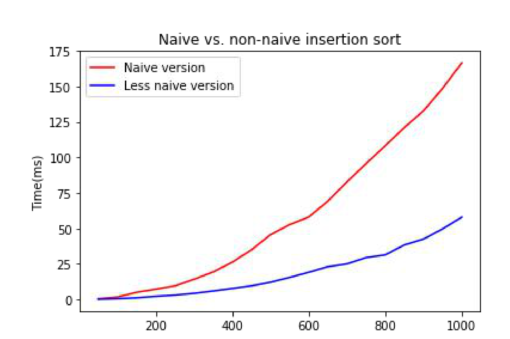
§3.2에서 센 연산 횟수는 \(2n^2 - n - 1\), \(2n^2 - n - 1\), \(2n^2 - 4n + 1\), … 이었습니다. §3.14의 다항식 정리를 적용하면 이 값들은 모두 \(O(n^2)\)이므로, InsertionSort의 실행 시간은 \(O(n^2)\)입니다. 위 실측 곡선의 모양과도 부합합니다(seems plausible).
그런데 사실 이제는 연산을 하나하나 셀 필요조차 없습니다. 의사코드의 루프 구조만 보고 바로 읽어낼 수 있습니다.
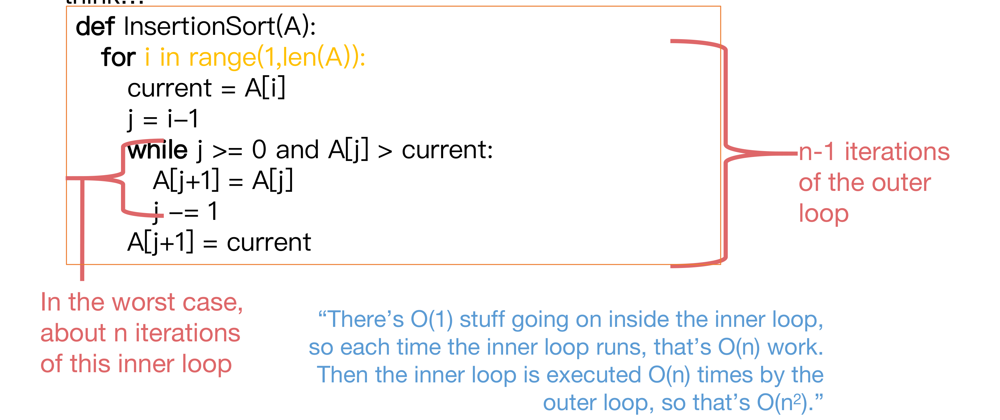
for i in range(1,len(A)) 루프 전체를 감싸며 “n-1 iterations of the outer loop”(바깥 루프는 \(n-1\)번 돈다)라고 표시하고, 왼쪽 아래 붉은 중괄호가 안쪽 while 루프의 본문을 감싸며 “In the worst case, about n iterations of this inner loop”(최악의 경우 안쪽 루프는 약 \(n\)번 돈다)라고 표시합니다. 아래쪽 파란 문장이 이 둘을 곱해 결론을 냅니다 — 안쪽 루프 본문은 \(O(1)\)이므로 안쪽 루프 한 번이 \(O(n)\)이고, 그것이 바깥 루프에 의해 \(O(n)\)번 실행되므로 총 \(O(n^2)\)입니다.3.19 여기까지 배운 것
InsertionSort는 임의의 \(n\)원소 배열을 시간 \(O(n^2)\)에 올바르게 정렬하는 알고리즘입니다.
두 질문에 모두 답했습니다. 남은 것은 1강의 세 번째 질문입니다 — 더 잘할 수 있을까(Can we do better?)
4. 병합 정렬 (MergeSort)
4.1 더 잘할 수 있을까 — 분할 정복
답은 MergeSort이고, 그 전략은 1강에서 이미 본 분할 정복(divide-and-conquer)입니다.
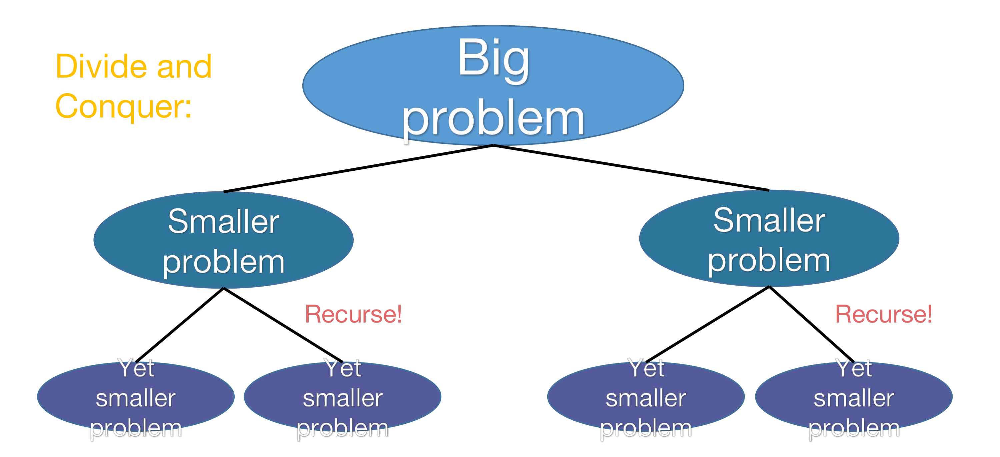
4.2 MergeSort의 아이디어
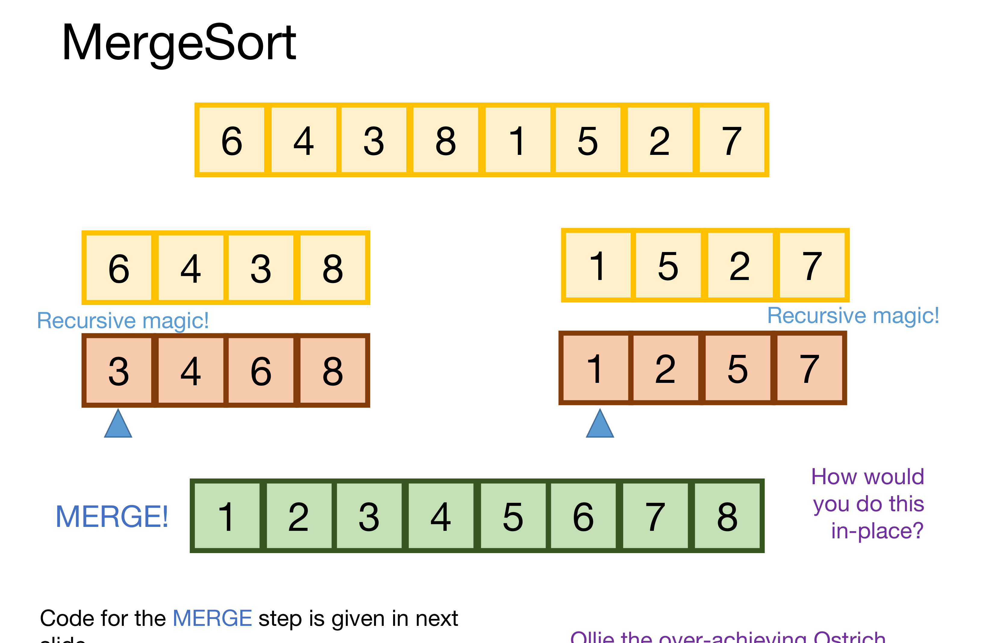
4.3 MERGE 단계의 코드
정렬된 두 리스트 L, R를 하나로 합치는 부분은 다음과 같습니다. 포인터 i, j가 각각 L, R를 훑고, k가 결과 배열 num의 쓰기 위치를 가리킵니다.
while i < len(L) and j < len(R):
if L[i] < R[j]:
num[k] = L[i] # 왼쪽이 더 작으면 왼쪽 값을 꺼내고
i+=1
else:
num[k] = R[j] # 아니면 오른쪽 값을 꺼내고
j+=1
k+=1 # 결과 배열의 쓰기 위치를 한 칸 전진두 포인터 중 하나가 리스트 끝에 닿으면 반복이 끝나며, 이때 남은 쪽의 나머지를 그대로 이어 붙이면 병합이 완료됩니다.
4.4 MergeSort 의사코드
MERGESORT(A):
n = length(A)
if n <= 1:
return A # 길이 1이면 이미 정렬되어 있음
L = MERGESORT(A[0 : n/2]) # 왼쪽 절반을 정렬
R = MERGESORT(A[n/2 : n]) # 오른쪽 절반을 정렬
return MERGE(L, R) # 두 절반을 병합위 의사코드는 0-기반 슬라이스 표기(A[0 : n/2], A[n/2 : n])를 쓰지만, 뒤에 나오는 정확성 증명 슬라이드의 의사코드 상자는 1-기반 표기(A[1 : n/2], A[n/2+1 : n])를 씁니다. 둘은 같은 알고리즘의 다른 인덱스 관례일 뿐이며, 어느 쪽이든 “앞 절반과 뒤 절반으로 겹치지 않게 나눈다”는 내용은 동일합니다. 참고로 강의는 MergeSort의 실제 파이썬 코드를 Lecture 2 IPython 노트북에서 제공한다고 안내합니다.
4.5 실제로는 무슨 일이 벌어지는가
재귀 호출을 펼쳐 보면 알고리즘은 내려가면서 쪼개고, 올라오면서 합치는 두 국면으로 나뉩니다.
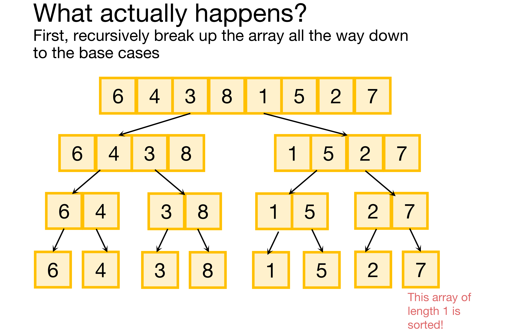
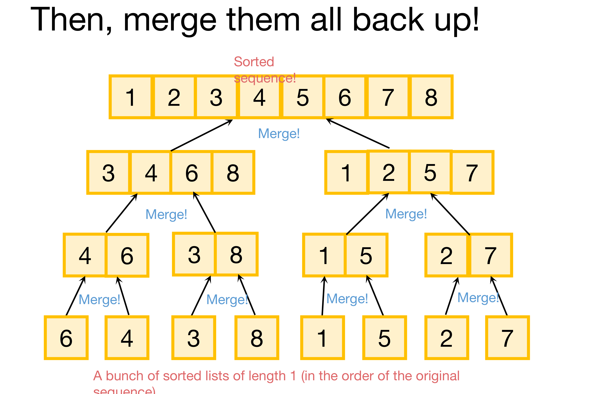
4.6 두 개의 질문
MergeSort에 대해서도 같은 두 질문을 던집니다. 경험적으로는 잘 동작하고(seems to work) 빨라 보입니다(seems fast). 하지만 §2에서 배웠듯 경험은 증명이 아니므로, 둘 다 제대로 보여야 합니다.
4.7 동작한다 (It works)
정확성 증명은 또 한 번의 수학적 귀납법입니다.
편의상 \(n\)이 \(2\)의 거듭제곱이라고 가정합니다.
- 귀납 가설: “길이가 최대 \(i\)인 배열에 대한 모든 재귀 호출에서, MERGESORT는 정렬된 배열을 반환한다.”
- 기저 사례(\(i=1\)): 원소가 하나인 배열은 언제나 정렬되어 있습니다.
- 귀납 단계: 귀납 가설이 \(k < i\)에 대해 성립하면 \(k = i\)에 대해서도 성립함을 보여야 합니다. 즉
L과R이 정렬되어 있다면MERGE(L, R)도 정렬되어 있음을 보이면 됩니다. - 결론: 최상위 재귀 호출에서 MERGESORT는 정렬된 배열을 반환합니다.
원본 슬라이드는 귀납 단계를 연습문제로 남기면서, 그것을 채우려면 MERGE 알고리즘 자체의 정확성을 증명해야 하고 그 증명에는 또 다른 귀납법이 필요할 수 있다는 힌트를 덧붙입니다.
4.8 빠르다 (It’s fast) — 주장
\[\textbf{MergeSort는 } O(n\log(n)) \textbf{ 시간에 동작한다.}\]
증명에 들어가기 전에, 이 값이 InsertionSort의 \(O(n^2)\)과 비교해 얼마나 좋은 것인지부터 확인합니다.
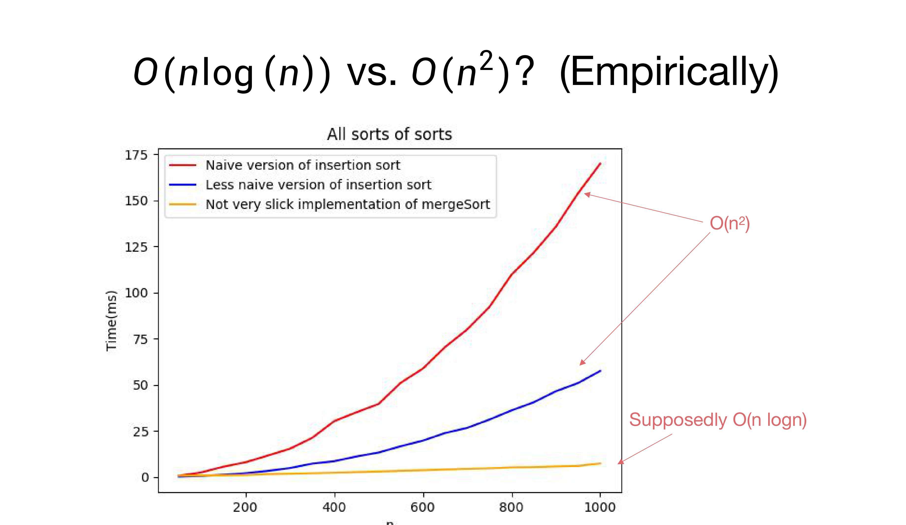
4.9 로그 복습 (Quick log refresher)
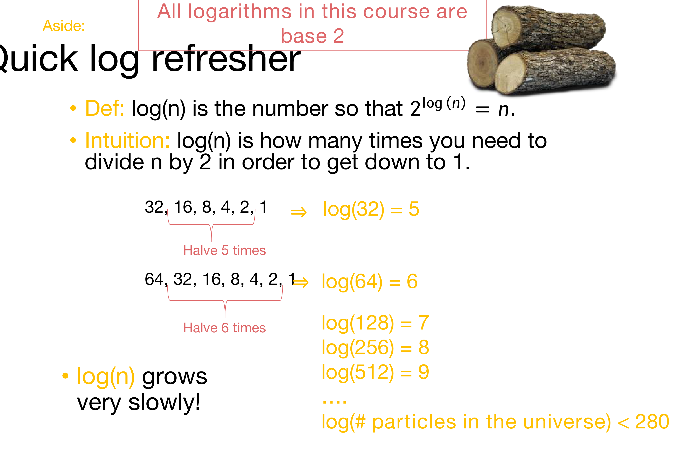
이 직관 — “\(n\)을 절반으로 계속 나누면 \(\log(n)\)번 만에 1이 된다” — 은 단순한 복습이 아닙니다. 곧 볼 재귀 트리에서 트리의 깊이가 정확히 \(\log(n)\)인 이유가 바로 이것입니다.
그래서 두 실행 시간을 비교하면 다음과 같습니다.
- \(\log(n)\)은 \(n\)보다 훨씬 느리게 자랍니다.
- 따라서 \(n\log(n)\)은 \(n^2\)보다 훨씬 느리게 자랍니다.
핵심 결론(Punchline): 실행 시간 \(O(n\log n)\)은 \(O(n^2)\)보다 훨씬 낫습니다.
4.10 주장의 증명 — 재귀 트리
이제 \(O(n\log n)\)을 증명합니다. 도구는 재귀 트리(recursion tree)입니다. (\(n\)은 \(2\)의 거듭제곱으로 가정합니다.)
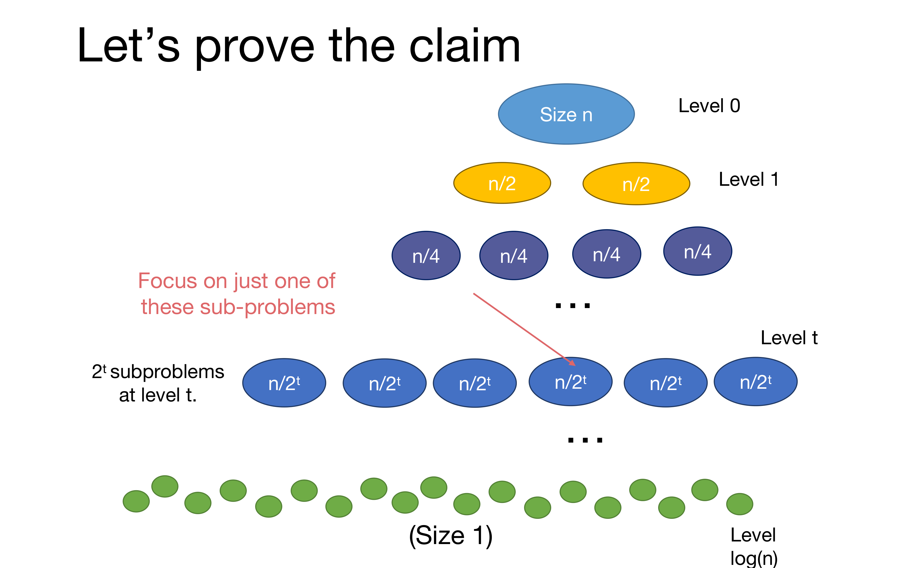
크기 \(k\)인 하위 문제 하나에서 일어나는 일을 분해하면 다음과 같습니다.
\[\text{크기 } k \text{ 문제의 총 작업량} \;=\; \underbrace{\text{두 하위 문제를 MERGE하는 시간}}_{\text{이 노드가 직접 하는 일}} \;+\; \underbrace{\text{두 하위 문제 내부에서 쓰는 시간}}_{\text{자식들에게 위임되는 일}}\]
여기서 \(k = n/2^t\)입니다. 이렇게 나누면 “이 노드가 직접 하는 일”만 따로 셀 수 있게 되고, 나머지는 아래 레벨로 넘어갑니다.
그렇다면 크기 \(k/2\)인 두 리스트를 MERGE하는 데 얼마나 걸릴까요?
답: \(O(k)\)입니다. 두 리스트를 앞에서부터 한 번만 훑고 지나가기 때문입니다(we just walk across the list once).
§4.3의 MERGE 코드를 보면 명확합니다. 반복문의 한 회전마다 i 또는 j가 정확히 하나씩 전진하고 k가 하나 증가하므로, 총 회전 수는 두 리스트의 길이 합, 곧 \(k\)에 비례합니다.
이제 레벨별로 총합을 내면 다음 표가 완성됩니다.
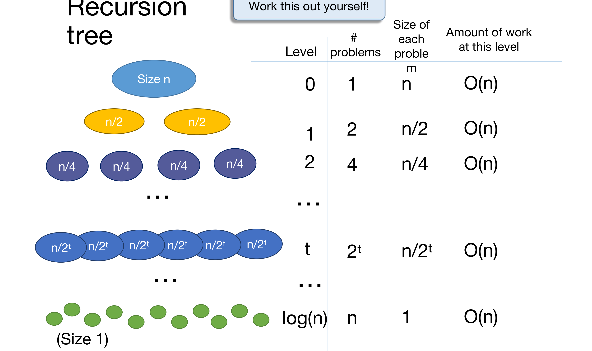
레벨 \(t\)의 작업량을 식으로 확인해 보면 상쇄가 분명히 보입니다.
\[\underbrace{2^t}_{\text{문제 개수}} \times \underbrace{O\!\left(\frac{n}{2^t}\right)}_{\text{문제 하나당 MERGE 비용}} \;=\; O(n)\]
4.11 총 실행 시간
이제 두 사실을 곱하기만 하면 됩니다.
- 모든 레벨에서, 레벨당 \(O(n)\) 단계
- 레벨은 총 \(\log(n) + 1\)개 (레벨 \(0\)부터 레벨 \(\log(n)\)까지)
\[T(n) \;=\; \underbrace{O(n)}_{\text{레벨당}} \times \underbrace{(\log(n) + 1)}_{\text{레벨 수}} \;=\; O(n\log n)\]
주장했던 그대로입니다.
4.12 여기까지 배운 것
- MergeSort는 \(n\)개 정수의 리스트를 시간 \(O(n\log(n))\)에 올바르게 정렬합니다.
- 이는 InsertionSort보다 (점근적으로) 더 낫습니다.
5. 마무리 (Wrap-Up)
5.1 오늘의 정리 (Recap)
결과 두 가지
- InsertionSort는 시간 \(O(n^2)\)에 동작합니다.
- MergeSort는 시간 \(O(n\log(n))\)에 동작하는 분할 정복 알고리즘입니다.
방법론 세 가지 — 이번 강의에서 진짜로 배운 것은 결과보다 이쪽입니다.
| 질문 | 이번 강의의 답 |
|---|---|
| 알고리즘이 옳음을 어떻게 보이는가? | 오늘은 수학적 귀납법으로 했습니다. |
| 알고리즘의 실행 시간을 어떻게 측정하는가? | 최악의 경우 분석 + 점근적 분석 |
| 재귀 알고리즘의 실행 시간을 어떻게 분석하는가? | 한 가지 방법은 재귀 트리를 그리는 것입니다. |
5.2 다음 시간 (Next time)
- 재귀 알고리즘의 실행 시간을 분석하는 더 체계적인 접근법을 다룹니다.
정리하며 (Closing Remarks)
이번 강의의 논증 사슬을 단계별로 압축하면 다음과 같습니다.
| 단계 | 내용 | 근거 |
|---|---|---|
| ① 질문 확정 | 알고리즘에 물을 것은 “동작하는가”와 “빠른가” 둘뿐이다 | 1강의 세 질문 |
| ② “동작한다” 정의 | 모든 입력에 대해 옳아야 한다 — 적대자가 최악의 입력을 고른다 | 최악의 경우 분석 |
| ③ 정의의 적용 | 정렬된 접두부에 원소 하나를 옳게 삽입하면 접두부가 한 칸 길어진다 | InsertionSort 귀납법 증명 |
| ④ “빠르다” 정의 | 상수배와 저차항을 버리고 \(n\)에 대한 증가율만 본다 | \(O\)의 형식적 정의 (\(\exists c, n_0\)) |
| ⑤ 정의의 적용 | 바깥 루프 \(n-1\)회 × 안쪽 루프 최대 \(n\)회 × 본문 \(O(1)\) | InsertionSort \(= O(n^2)\) |
| ⑥ 더 나은 알고리즘 | 절반씩 쪼개 재귀로 정렬한 뒤 선형 시간에 병합한다 | MergeSort (분할 정복) |
| ⑦ 재귀의 분석 | 레벨당 \(2^t \times O(n/2^t) = O(n)\), 레벨 수 \(\log n + 1\) | 재귀 트리 |
| ⑧ 결론 | \(O(n\log n) \prec O(n^2)\) | MergeSort가 점근적으로 우월 |
개인적인 감상 몇 가지를 덧붙입니다.
- 가장 인상적인 지점은 이 강의가 알고리즘을 가르치기 전에 “질문의 뜻”부터 정의한다는 설계입니다. 보통의 자료라면 “InsertionSort는 \(O(n^2)\), MergeSort는 \(O(n\log n)\)”이라는 결론을 먼저 던지고 증명을 붙일 텐데, 이 강의는 “동작한다”와 “빠르다”가 무슨 뜻인지 모르는 상태에서 출발해 두 정의를 만들어 낸 다음 그것을 적용합니다. 그래서 최악의 경우 분석도 점근 표기법도 외워야 할 규약이 아니라, 모호한 질문을 답할 수 있는 질문으로 바꾸기 위해 발명된 도구로 읽힙니다.
- “장점: 매우 강한 보장 / 단점: 매우 강한 보장”이라는 한 줄은 이 강의에서 가장 밀도 높은 문장입니다. 최악의 경우 분석이 선택이지 자연법칙이 아니라는 사실, 그리고 그 선택에는 대가가 따른다는 사실을 두 단어의 반복만으로 전달합니다. 평균 경우 분석이나 분할 상환 분석 같은 대안들이 왜 존재하는지가 이 한 줄에 이미 예고되어 있습니다.
- 잘못된 증명을 먼저 보여 주는 구성도 인상적입니다. “예시 하나에서 잘 됐다”, “무작위 리스트 100개에서 잘 됐다”를 진지하게 제시했다가 기각하는 순서를 밟기 때문에, 뒤이어 나오는 귀납법이 형식을 갖추기 위한 의례가 아니라 실제로 필요한 것으로 느껴집니다. 실험적 검증과 증명 사이의 간극을 이보다 짧게 보여 주기는 어려울 것 같습니다.
- 재귀 트리 분석의 아름다움은 “개수 \(\times 2\), 크기 \(\div 2\)”라는 두 변화가 정확히 상쇄되어 레벨당 작업량이 상수처럼 \(O(n)\)으로 고정된다는 점에 있습니다. 그 덕분에 복잡해 보이던 재귀의 총 비용이 “레벨당 비용 × 레벨 수”라는 곱셈 하나로 무너집니다. 다만 이 상쇄는 “절반씩 나누고, 병합이 선형”이라는 조건 아래에서만 일어납니다. 나누는 비율이나 병합 비용이 달라지면 어떻게 되는지 — 그것이 바로 다음 강의가 예고한 “더 체계적인 접근법”이 답할 문제일 것입니다.
- 실용적 한계도 정직하게 남아 있습니다. \(10^9 n\)이 \(n^2\)보다 “낫다”는 결론이 나오는 지점, 그리고 \(n_0 = 2^{10000000}\) 같은 문턱이 허용된다는 지점에서 점근 표기법은 명백히 현실과 어긋납니다. 강의가 “남용하지 말라”고 경고하며 넘어가지만, 실제 코드에서 상수 계수가 얼마나 중요한지는 §4.8의 그래프에서 같은 \(O(n^2)\)인 두 삽입 정렬 구현이 세 배 차이가 나는 장면이 이미 보여 주고 있습니다.